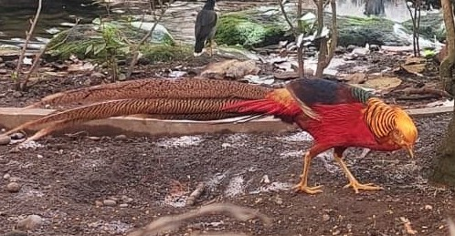
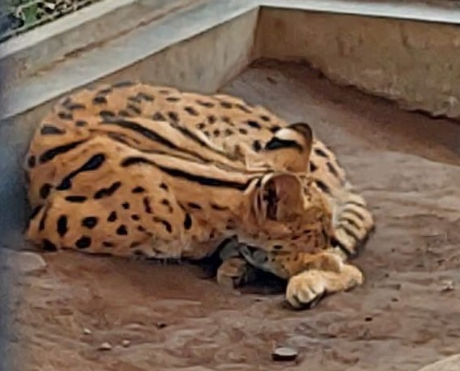
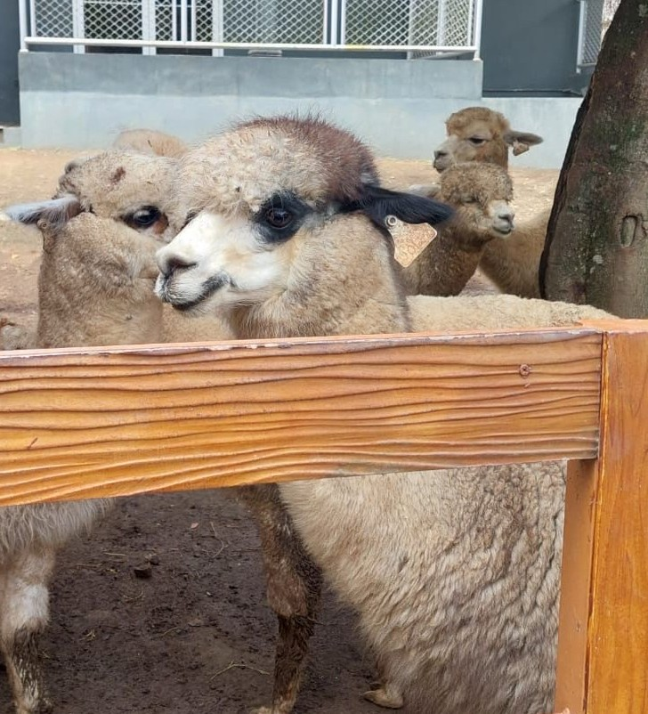
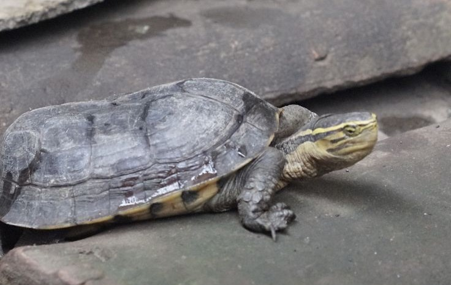
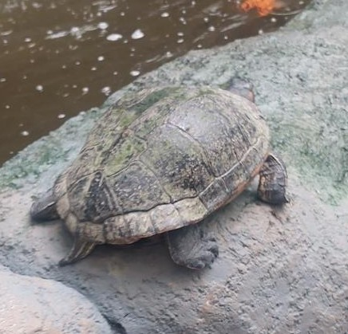

Kategori hewan

Merak Hijau adalah burung indah berukuran besar dengan bulu dominan hijau keemasan mengkilap, jambul tegak, dan ekor panjang (jantan) dengan corak mata khas, sementara betina lebih kecil dan kusam. Jantan memamerkan kipas ekornya saat musim kawin, dan mereka hidup di hutan tropis Asia Tenggara termasuk Jawa, Indonesia, namun terancam punah akibat hilangnya habitat dan perburuan, menjadikannya satwa yang dilindungi.

Merak putih adalah varian merak India (Pavo cristatus) yang bulunya berwarna putih bersih karena mutasi genetik langka bernama leukisme, bukan albino, yang mengurangi pigmentasi melanin. Mereka anggun, memiliki mahkota bulu seperti kipas, dan merak jantan memiliki ekor panjang yang bisa dikembangkan, sementara betina lebih pendek dan tanpa taji, walau anakan merak putih menetas dengan bulu cokelat muda dan berubah menjadi putih seiring dewasa. Keberadaannya sangat langka di alam liar, sering ditemukan di penangkaran atau kebun binatang.

Golden Pheasant (Chrysolophus pictus) adalah burung pegar yang sangat indah dari Tiongkok, terkenal dengan bulu jantan yang mencolok jambul emas, punggung hijau, dada merah, dan ekor panjang berwarna-warni, sementara betina berwarna cokelat kusam untuk kamuflase mereka hidup di hutan pegunungan, memakan biji, buah beri, dan serangga, menghabiskan sebagian besar waktu di darat, dan terbang cepat hanya saat terancam.

Silver Pheasant (Kuau Perak, Lophura nycthemera) adalah burung pegar yang menawan dari hutan Asia Tenggara & Tiongkok, terkenal dengan jantan hitam-putih spektakuler berekor panjang dan betina cokelat kamuflase, keduanya punya wajah merah cerah & kaki merah; mereka omnivora, pemalu tapi tangguh, sering dibudidayakan, dan menjadi simbol keindahan liar meskipun beberapa subspesiesnya terancam punah.

Yellow Pheasant (Pegar Emas) adalah ayam hias yang menawan dari Cina, terkenal karena pejantannya memiliki bulu dominan kuning keemasan dengan jambul kuning, dada merah, punggung hijau, dan sayap biru/merah, sementara betinanya berwarna cokelat berbintik kalem, keduanya punya kaki dan paruh kuning, serta suka makan biji-bijian dan serangga di tanah namun bertengger di pohon saat malam.

Caracal adalah kucing liar berukuran sedang, ramping, berwarna cokelat kemerahan atau keemasan, terkenal dengan jumbai telinga hitam panjang yang khas, membantunya berburu dan berkomunikasi di habitat kering seperti padang rumput, sabana, hingga hutan di Afrika, Timur Tengah, dan Asia. Dikenal karena lompatannya yang luar biasa untuk menangkap burung dan hewan kecil lainnya, karakal adalah pemburu lincah yang umumnya soliter dan nokturnal, bahkan pernah dilatih untuk berburu oleh bangsawan.

Serval adalah kucing liar Afrika berukuran sedang yang khas dengan tubuh ramping, leher panjang, dan kaki sangat panjang, serta bulu kuning keemasan berbintik hitam, membuatnya dijuluki "kucing jerapah" karena proporsinya unik. Dikenal sebagai predator cekatan, ia memiliki telinga besar dan pendengaran tajam untuk melacak mangsa kecil seperti tikus, serangga, dan burung di sabana, mampu melompat tinggi dan berlari cepat, meski lebih suka hidup soliter di dekat air.

Alpaka adalah mamalia dari keluarga unta (Camelidae) yang berasal dari Pegunungan Andes, Amerika Selatan, terkenal karena bulunya yang sangat lembut, hangat, dan berkualitas tinggi yang digunakan untuk tekstil mewah. Ukurannya lebih kecil dari llama, tidak digunakan sebagai hewan pengangkut beban, melainkan dibiakkan khusus untuk diambil wolnya yang hypoallergenic dan digunakan untuk pakaian, sweter, dan kerajinan lainnya. Alpaka adalah hewan ternak domestikasi dari vicuña dan memiliki dua jenis utama Huacaya (bulu keriting) dan Suri (bulu gimbal terurai).

Poni Shetland adalah ras poni kecil yang berasal dari Kepulauan Shetland, dikenal sangat kuat, tangguh, cerdas, dan berbulu tebal, dengan ciri fisik kepala kecil, mata cerdas, tubuh kekar, kaki pendek berotot, serta surai dan ekor lebat. Mereka beradaptasi dengan iklim keras, memiliki temperamen percaya diri namun bisa keras kepala jika tidak dilatih dengan baik, dan banyak digunakan sebagai tunggangan anak-anak atau hewan beban karena kekuatannya yang luar biasa untuk ukurannya.

Axolotl adalah jenis salamander unik dari Meksiko yang terkenal karena tidak mengalami metamorfosis (tetap dalam fase larva seumur hidup), memiliki insang luar berbulu, dan kemampuan regenerasi luar biasa untuk menumbuhkan kembali bagian tubuh yang hilang seperti kaki, sumsum tulang belakang, bahkan sebagian otak. Hewan ini sering disebut "ikan berjalan Meksiko" karena penampilannya, meski sebenarnya amfibi air tawar yang terancam punah di alam liar tetapi populer sebagai hewan peliharaan dan penelitian.

Hiu Sirip Hitam (Blacktip Shark) adalah hiu berukuran kecil hingga sedang yang mudah dikenali dari ujung siripnya yang berwarna hitam, dengan warna tubuh abu-abu hingga cokelat di atas dan putih di bawah, serta pita pucat di sisi tubuhnya. Mereka memiliki tubuh ramping, moncong pendek, dan sering berburu ikan kecil di perairan pantai hangat, laguna karang, dan muara, kadang melompat keluar air, menjadikannya sering terlihat dan populer dalam wisata selam.

Iguana adalah reptil besar herbivor dengan tubuh bersisik, duri di punggung, dan jambul di bawah rahang, seringkali berwarna hijau atau coklat, hidup di daerah tropis, mampu memanjat pohon dengan cakarnya yang tajam, dan memiliki ekor kuat yang bisa dilepas sebagai mekanisme pertahanan diri (autotomi). Ciri uniknya termasuk "mata ketiga" di atas kepala untuk mendeteksi cahaya dan kemampuan berenang yang baik, menjadikannya hewan eksotis yang terkenal.

Ikan Dori adalah sebutan umum untuk ikan laut John Dory (asli) atau ikan patin (Pangasius sp.) yang sering diolah menjadi fillet di Indonesia, memiliki daging putih lembut, gurih, dan rendah duri, cocok untuk berbagai masakan seperti fish and chips, kaya protein, vitamin, dan omega-3, namun "dori" yang dijual di pasar seringkali adalah ikan patin yang dibudidayakan, bukan John Dory laut dalam.

Kura-kura AST (Alligator Snapping Turtle) adalah kura-kura air tawar terbesar di AS, dijuluki "fosil hidup" karena penampilannya yang purba dengan cangkang berduri dan kepala besar berahang kuat, menyerupai aligator, mampu menggigit dengan kekuatan luar biasa untuk menangkap ikan dan mangsa lainnya, menggunakan lidahnya yang seperti cacing sebagai umpan untuk menarik mangsa, dan hidup di perairan Amerika Serikat bagian tenggara.

Kura-kura Sulcata (African Spurred Tortoise) adalah spesies kura-kura darat terbesar ketiga di dunia, berasal dari gurun Afrika, dikenal karena tubuhnya yang kokoh, warna cangkang coklat kekuningan seperti pasir, serta taji khas di paha belakangnya, dan memiliki umur panjang hingga puluhan tahun dengan pola makan herbivora dari rumput dan tumbuhan. Hewan ini hidup di lingkungan kering dan suka menggali liang untuk berlindung dari panas ekstrem, menjadikannya populer sebagai hewan peliharaan eksotis yang membutuhkan perawatan khusus.

Katak Pacman (genus Ceratophrys) adalah amfibi Amerika Selatan bertubuh bulat, bermulut sangat besar, dan seringkali memiliki "tanduk" kecil di atas mata, dijuluki karena kemiripannya dengan karakter game Pac-Man; mereka adalah predator penyergap yang menunggu mangsa terkubur di substrat lembap, bersifat nokturnal, dan memiliki nafsu makan rakus, bahkan bisa memangsa hewan lain yang muat di mulutnya. Dikenal juga sebagai Katak Bertanduk, katak ini populer sebagai hewan peliharaan eksotis karena penampilannya unik, meskipun tidak suka sering dipegang karena gigitannya bisa menyakitkan.